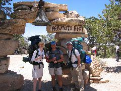
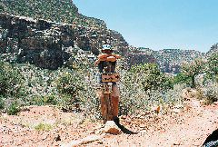
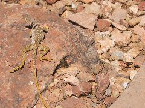
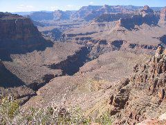
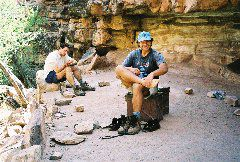
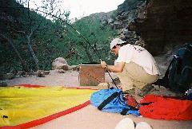
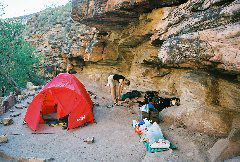
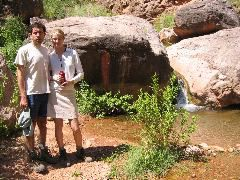

|

Beginning the journey |

|

|
|

|

Our campsite |

Building the tent |
|

|

|
We arrived at Grand Canyon village at dusk, after a dancing party in New York, a smooth plane ride into Phoenix, and a four-hour drive through Flagstaff, Arizona. Tired but excited to see the Canyon, we set out for the South Rim lookout, from where we admired the landscape that we were going to enter the next day. However, to avoid spoiling the morning impression, we kept our observation time short and we went to a local restaurant to enjoy the last dinner at a table that we were going to have for a while.
The night was chilly at the Mather campground on the rim and the three of us slept cozily and straight through the night. At 6:30am we woke up, took down the camp, and fixed some minor flaws in the cooking equipment.
Hiking at noon under the 110F (40C) heat was not ideal, but after dealing with the chores of leaving camp, checking the entry permit with the Park Rangers, finding the shuttle, and riding to Hermit's Rest, our trailhead, we had consumed more time that we expected. So, down we went into the Canyon, thrilled to get the first sights of the geology of the region that was unveiling itself as we went down Hermit Creek and the walls of the valley slowly opened. A while later we were going down Hermit Creek trail admiring our first beautiful Canyon geckos, taking pictures of the lizards at every posture, without concealing our urbanite awe.
The Rangers had told us water would not be a problem in the first part of our journey, and the map confirmed perennial sources at Hermit and Monument creeks. So we kept our water load light and we packed a mere 3 liters of water each to get us down the 13km rocky descent. Five hours later, as we climbed down the Cathedral Steps and we were to reach the Tonto trail intersection, we ran out of water and we started showing some signs of exhaustion. Fortunately, the walls of the Canyon were already creating some shade in which we walked for about one hour more before we unloaded our 18kg backpacks on our first campsite. Two of us were showing signs of heatstroke, experiencing minor headaches and nausea, which we fought with an immediate intake of one liter of Gatorade each, produced with the Hermit Spring waters. After that and a satisfying dinner of precooked-and-dried bacon and eggs and pasta primavera, we were all feeling much better and we were able to relax and appreciate our surroundings.
<--Previous day | Next day--> * Index